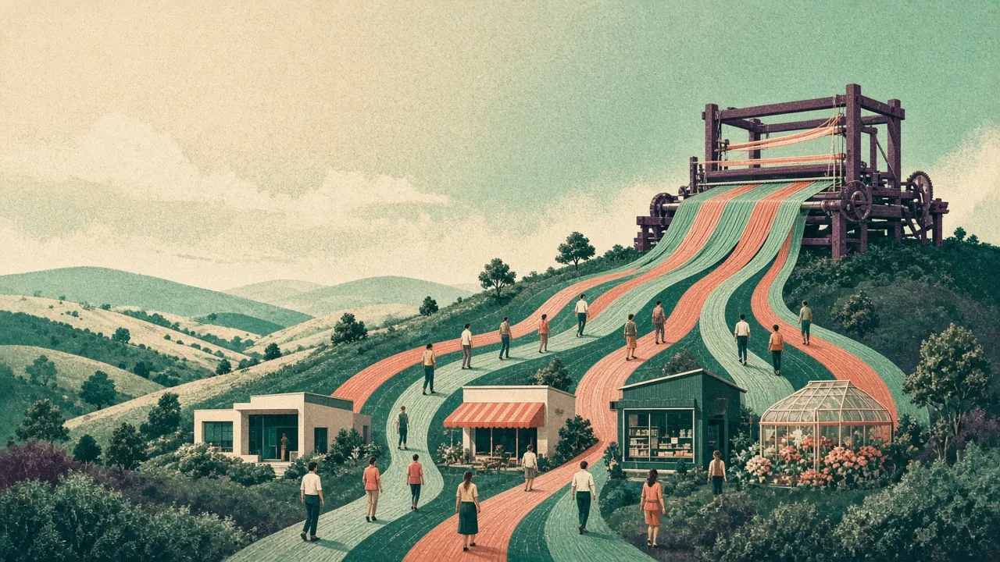
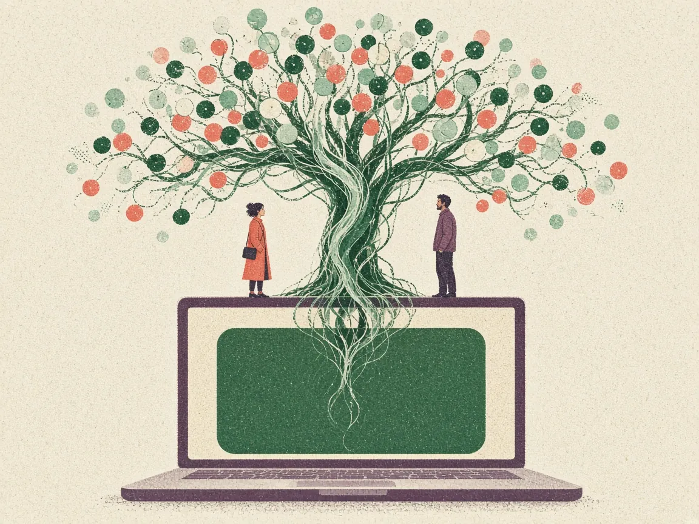

Grow
Capital for the big moves
- Term loans
- A lump sum with fixed repayments for fit-outs, equipment or hiring ahead of demand.
- Acquisition finance
- Buy a practice, rent roll or client book, sized on the data your platform already holds.

Woven lets software platforms, marketplaces and payment providers offer business loans in their own brand. We fund every loan and run the program. You keep the customer.
Built for software platforms, marketplaces and payment processors whose customers are growing businesses.

Underwriting, compliance, servicing and collections sit with Woven, so your team stays on your roadmap.
White-label components and an API-first build make finance feel native to your app.
Woven funds each loan and makes each credit decision. Nothing lands on your balance sheet.
One integration puts offers inside the workflows your customers already use.
One secure connection. Offers appear, customers apply and repay, all inside your product.
Drop in our components or call the API for offers, applications and loan status.
Business and transaction data flows to Woven over one secure link.
Pre-qualified offers show inside your platform and stay current as the data changes.
A short hosted flow in your brand, with bank, bureau, identity and registry checks built in.
Most approved customers are funded the next business day. Repayments collect automatically.
Your platform takes a revenue share on every loan written through it.
Each product is configured around your platform and the businesses on it.
Capital for the big moves
Breathing room between in and out
Get paid before the money lands
“Businesses will borrow through the software they already run on. That software knows them better than any bank, so it should be where capital arrives.”The Woven thesis
Building an in-house lending arm rarely adds up: compliance, treasury and capital costs are steep. Woven is white-label and live in weeks, so a platform can offer finance inside its own product and carry none of the risk.
Tell us about your platform and your customers. We will show you how a program could look, and what it could earn.
Book a conversation hello@wovenfinance.com.au